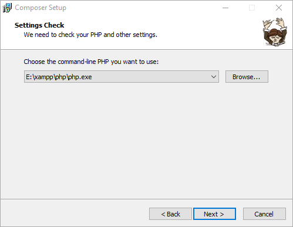
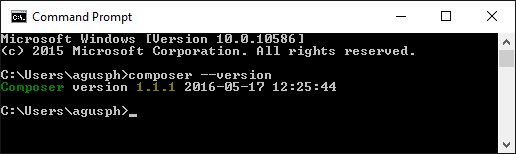

Composer is a dependency management tool for PHP, used to manage the libraries required by a project and their versions.
Composer defines dependencies through the composer.json file and automatically handles installation and updates.
By default, Composer is not installed globally, but is installed in a specific directory of the given project (e.g., vendor).
Composer requires PHP 5.3.2+ or later, and openssl must be enabled.
Composer can run on Windows, Linux, and OSX platforms.

Main Features
Dependency management: Automatically install and manage the libraries required by the project.
Autoloading: Generate autoload files to simplify class loading.
Version control: Supports semantic versioning to ensure compatibility of dependent libraries.
Script support: Allows running custom scripts on specific events (such as install or update).
Composer generates the vendor/autoload.php file. Simply include it in the project to automatically load classes:
require 'vendor/autoload.php';
Installing Composer
Windows Platform
On Windows, we just need to downloadComposer-Setup.exeand then install it step by step.
Note that you need to enable the openssl configuration. Open php.ini in the php directory, andextension=php_openssl.dllJust remove the semicolon before it.

After successful installation, we can enter the following command in the command prompt (cmd):composer --versionto check whether the installation was successful:

Next, we can switch to the Alibaba Cloud Composer full mirror:
composer config -g repo.packagist composer https://mirrors.aliyun.com/composer/
Cancel configuration:
composer config -g --unset repos.packagist
Project configuration
Only modifies the current project configuration; only the current project can use this mirror address:
composer config repo.packagist composer https://mirrors.aliyun.com/composer/
Cancel configuration:
composer config --unset repos.packagist
Debugging
Adding -vvv to the composer command outputs detailed information. The command is as follows:
composer -vvv require alibabacloud/sdk
Encountering issues?
1. It is recommended to first upgrade the Composer version to the latest:
composer self-update
2. Run the diagnostic command:
composer diagnose
3. Clear the cache:
composer clear
4. If the project was previously installed from other sources, you need to update the composer.lock file by running the command:
composer update --lock
5. Try again once
Linux Platform
On Linux, you can use the following commands to install:
# php -r "copy('https://install.phpcomposer.com/installer', 'composer-setup.php');"
# php composer-setup.php
All settings correct for using Composer
Downloading...
Composer (version 1.6.5) successfully installed to: /root/composer.phar
Use it: php composer.phar
Move composer.phar so that composer can be called globally:
# mv composer.phar /usr/local/bin/composer
Switch to a domestic mirror:
# composer config -g repo.packagist composer https://mirrors.aliyun.com/composer/
Update composer:
# composer selfupdate
Mac OS System
On Mac OS, you can use the following commands to install:
$ curl -sS https://getcomposer.org/installer | php $ sudo mv composer.phar /usr/local/bin/composer $ composer --version Composer version 1.7.2 2018-08-16 16:57:12
Switch to a domestic mirror:
$ composer config -g repo.packagist composer https://mirrors.aliyun.com/composer/
Update composer:
$ composer selfupdate
Using Composer
To use Composer, we first need to create a composer.json file in the project directory. The file describes the project's dependencies.
The file format is as follows:
{
"require": {
"monolog/monolog": "1.2.*"
}
}
The above file indicates that we need to download any version of monolog starting from 1.2.
Next, just run the following command to install the dependency packages:
composer install
require command
In addition to using the install command, we can also use the require command to quickly install a dependency without manually adding dependency information to composer.json:
$ composer require monolog/monolog
Composer will first find a suitable version, then update the composer.json file, add the relevant information of the monolog/monolog package under require, download and install the related dependencies, and finally update the composer.lock file and generate the PHP autoload file.
update command
The update command is used to update all packages in the project, or specific packages:
# 更新所有依赖 $ composer update # 更新指定的包 $ composer update monolog/monolog # 更新指定的多个包 $ composer update monolog/monolog symfony/dependency-injection # 还可以通过通配符匹配包 $ composer update monolog/monolog symfony/*
Note that the versions to which a package can be upgraded are constrained by the version constraints; the package will not be upgraded beyond the range allowed by the constraints. For example, if the version constraint for a package in composer.json is ^1.10, and the latest version is 2.0, then the update command cannot upgrade the package to 2.0; it can only upgrade up to a 1.x version. For version constraints, see the introduction later.
remove command
The remove command is used to remove a package and its dependencies (provided the dependencies are not used by other packages). If a dependency is used by another package, it cannot be removed:
$ composer remove monolog/monolog Loading composer repositories with package information Updating dependencies (including require-dev) Package operations: 0 installs, 0 updates, 2 removals - Removing psr/log (1.0.2) - Removing monolog/monolog (1.23.0) Generating autoload files
search command
The search command can search for packages:
$ composer search monolog
This command outputs the package and its description. If you only want to output the package name, you can use the--only-nameparameter:
$ composer search --only-name monolog
show command
The show command can list information about the packages used by the current project:
# 列出所有已经安装的包 $ composer show # 可以通过通配符进行筛选 $ composer show monolog/* # 显示具体某个包的信息 $ composer show monolog/monolog
Basic Constraints
Exact Version
We can tell Composer the exact version to install, for example: 1.0.2, specifying the 1.0.2 version.
Range
Use comparison operators to specify the range of a package. These operators include:>，>=，<，<=，!=。
You can define multiple ranges. Use spaces or commas , for logical AND, and double vertical bars || for logical OR. The priority of AND is higher than OR. Example:
- >=1.0
- >=1.0 <2.0
- >=1.0 <1.1 || >=1.2
We can also use a hyphen-to specify a version range.
The left side of the hyphen indicates>=the version. If the version on the right is not a complete version number, it will be completed using wildcards. For example1.0 - 2.0is equivalent to>=1.0.0 <2.1（2.0is equivalent to2.0.*), and1.0.0 - 2.1.0is equivalent to>=1.0.0 <=2.1.0。
Wildcard
You can use wildcards to set versions.1.0.*is equivalent to>=1.0 <1.1。
Example:1.0.*
Tilde ~
Let's first explain the usage of the ~ operator through the following example:~1.2is equivalent to>=1.2 <2.0.0, and~1.2.3is equivalent to>=1.2.3 <1.3.0. For projects usingSemantic Versioningas the versioning standard, this version constraint method is very practical. For example~1.2defines the minimum minor version, and you can upgrade to any version below 2.0 without issues, because according toSemantic Versioningthe version definition, minor version upgrades should not have compatibility issues. In simple terms,~defines the minimum version and allows the last digit of the version number to be upgraded (if you didn't understand, please look at the previous examples again).
Example:~1.2
Note that if ~ acts on the major version number, for example
~1, according to the above, Composer could install major versions after version 1, but in fact~1is treated as~1.0, so only minor versions can be increased, not the major version.
Caret ^
^The behavior of the operator is closely related toSemantic Versioning. It allows upgrading versions to safe versions. For example,^1.2.3is equivalent to>=1.2.3 <2.0.0, because versions before 2.0 should not have compatibility issues. For versions before 1.0, this constraint also takes safety into account, for example^0.3is treated as>=0.3.0 <0.4.0.
Example:^1.2.3
Version Stability
If you do not explicitly specify the stability of a version, Composer will internally default to-devor-stable. For example:
| Constraint | Internal constraint |
|---|---|
1.2.3 |
=1.2.3.0-stable |
>1.2 |
>1.2.0.0-stable |
>=1.2 |
>=1.2.0.0-dev |
>=1.2-stable |
>=1.2.0.0-stable |
<1.3 |
<1.3.0.0-dev |
<=1.3 |
<=1.3.0.0-stable |
1 - 2 |
>=1.0.0.0-dev <3.0.0.0-dev |
~1.3 |
>=1.3.0.0-dev <2.0.0.0-dev |
1.4.* |
>=1.4.0.0-dev <1.5.0.0-dev |
1.0 - 2.0If you want to specify that only stable versions are accepted, you can add a suffix after the version-stable。
minimum-stabilityThe configuration item defines the default behavior for stability selection when a package chooses a version. The default isstable. Its values are as follows (sorted by stability):dev，alpha，beta，RC和stableIn addition to modifying this configuration to change the default behavior, we can alsostability flag(for example@stable和@dev) to install a version with different stability compared to the default configuration. For example:
{
"require": {
"monolog/monolog": "1.0.*@beta",
"acme/foo": "@dev"
}
}
Click me to share notes
<p style="font-size:14px;">The note must be an extension of the content of this article!</p><br> <p style="font-size:12px;"><a href="../tougao.html" target="_blank">To submit an article, click here</a></p> <p style="font-size:14px;"><a href="./runoob-user-test-intro.html" target="_blank">How to obtain registration invitation code</a></p> <h3 class="text-muted"><i class="fa fa-info-circle" aria-hidden="true"></i> Before sharing notes, you must <a href=".." class="runoob-pop">log in</a>!</h3> <p><a href="./runoob-user-test-intro.html" target="_blank">How to obtain registration invitation code</a></p>